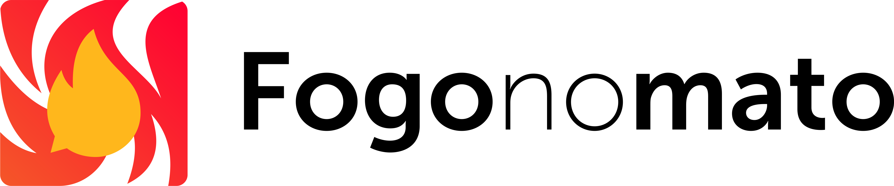
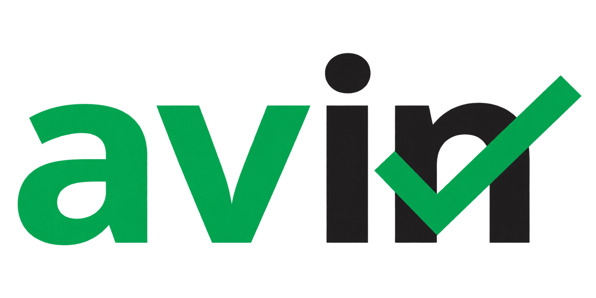
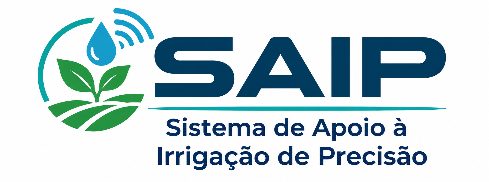

Data
Dados como base para compreender problemas, gerar conhecimento e apoiar decisões.

Data, Analytics, Technologies & Artificial Intelligence
Transformamos dados, inteligência artificial, sensoriamento e tecnologia em soluções para desafios reais de empresas, instituições e da sociedade.
O DATALab é um laboratório de Pesquisa, Desenvolvimento e Inovação do Instituto Federal da Paraíba — Campus Soledade. Reúne professores, pesquisadores e estudantes em torno do desenvolvimento de soluções computacionais baseadas em dados, inteligência artificial, analytics e tecnologias inteligentes.
Nosso foco é aproximar pesquisa e aplicação prática, transformando desafios de organizações públicas e privadas em projetos de P&D capazes de gerar conhecimento, protótipos, sistemas e soluções tecnológicas.
O laboratório atua de forma integrada ao ecossistema de inovação do IFPB, buscando parcerias com empresas, instituições e o Polo de Inovação do IFPB.
Dados como base para compreender problemas, gerar conhecimento e apoiar decisões.
Ciência de dados, análise avançada, visualização e inteligência para decisões.
Software, cloud, sistemas distribuídos, sensores, IoT e computação na borda.
Machine Learning, IA generativa e sistemas inteligentes aplicados a problemas reais.
Atuamos em áreas complementares, permitindo construir soluções completas — da aquisição e integração dos dados à análise, inteligência e tomada de decisão.
Modelos de aprendizado de máquina, IA generativa, visão computacional, sistemas inteligentes e automação baseada em dados.
Análise exploratória, mineração de dados, modelagem preditiva, séries temporais e geração de conhecimento a partir de dados.
Indicadores, dashboards, integração de dados e soluções analíticas para apoiar processos gerenciais e estratégicos.
Coleta de dados no mundo físico, dispositivos conectados, processamento na borda e monitoramento inteligente.
Integração, armazenamento, processamento em fluxo, cloud computing, APIs e desenvolvimento de sistemas orientados a dados.
Um portfólio de competências para projetos de P&D, prototipação e desenvolvimento tecnológico.
Projetos que exemplificam como as competências do DATALab podem ser combinadas para resolver problemas concretos.

O Fogo no Mato é uma iniciativa voltada ao monitoramento e à análise de focos de incêndio por meio de dados geoespaciais, sensoriamento e técnicas de análise de dados. A solução integra informações de diferentes fontes para identificar ocorrências, recorrências e padrões espaciais e temporais, apoiando a compreensão de áreas mais críticas e da evolução histórica dos incêndios florestais. O projeto explora recursos de Data Science, Analytics, geoprocessamento e sistemas de informação para transformar dados ambientais em informações úteis ao monitoramento e à tomada de decisão.

O AVIN é uma plataforma desenvolvida para apoiar o processo de autoavaliação institucional e a gestão contínua de melhorias no IFPB. A solução integra coleta de percepções, análise de resultados, identificação automática de fragilidades e potencialidades e acompanhamento de ações de melhoria. Por meio de recursos de Sistemas de Informação, Data Analytics, Business Intelligence e computação em nuvem, o AVIN transforma dados institucionais em informações gerenciais que apoiam a tomada de decisão, o monitoramento de indicadores e o acompanhamento da evolução das ações planejadas.

O SAIP (Sistema de Apoio à Irrigação de Precisão) é uma plataforma desenvolvida para apoiar o manejo inteligente da irrigação por meio de sensoriamento do solo, Internet das Coisas e comunicação sem fio de longo alcance. A solução integra uma rede de sensores em campo, um gateway com processamento na borda, capaz de acionar a irrigação de forma autônoma mesmo sem conexão com a internet, e uma plataforma em nuvem que reúne o histórico de medições, a previsão do tempo e diferentes estratégias de acionamento, da manual à totalmente automática. Por meio de recursos de Sensoriamento, IoT, Edge Computing, sistemas embarcados e computação em nuvem, o SAIP transforma dados de campo em decisões de irrigação que apoiam o uso eficiente da água, a redução de desperdícios e o aumento da produtividade agrícola.
Buscamos novas parcerias para projetos de pesquisa aplicada e desenvolvimento tecnológico em colaboração com empresas e instituições.
Converse com o DATALab →A atuação do DATALab conecta produção científica, formação de pessoas e desenvolvimento de soluções tecnológicas.
Investigação orientada a problemas reais e desafios tecnológicos.
Artigos, trabalhos acadêmicos, software, datasets e resultados de pesquisa.
Integração de estudantes em atividades de pesquisa, desenvolvimento e inovação.
Aplicação das competências do grupo em projetos colaborativos com parceiros externos.
Pesquisadores com experiência acadêmica e profissional em IA, dados, sistemas, redes, sensoriamento, software e sustentabilidade.
Doutor em Ciência da Computação — UFCG · PhD em Information and Systems — Tampere University, Finlândia
Professor e pesquisador do Instituto Federal da Paraíba (IFPB), com atuação em Pesquisa, Desenvolvimento e Inovação nas áreas de Inteligência Artificial, Data Science & Analytics, Business Intelligence, Sistemas Inteligentes e Sensoriamento. Desenvolve pesquisas e soluções baseadas em aprendizado de máquina, integração e análise de dados, processamento de dados em fluxo, Entity Resolution, Inteligência Artificial explicável e responsável, computação em nuvem, sistemas distribuídos, Internet das Coisas e Edge Computing. Possui experiência na concepção e desenvolvimento de soluções orientadas a dados para apoio à tomada de decisão, automação e monitoramento inteligente, integrando técnicas de IA, analytics, BI e dados provenientes de sensores e dispositivos conectados. Atua também em projetos de P&D em colaboração com instituições acadêmicas, grupos de pesquisa e parceiros do setor produtivo, com interesse na transformação de desafios reais em soluções tecnológicas inteligentes, escaláveis e orientadas por dados.
Graduado em Ciência da Computação — UFCG · Mestre em Ciência e Tecnologia em Saúde — UEPB
Possui graduação em Ciência da Computação pela Universidade Federal de Campina Grande, pós-graduação em Engenharia de Sistemas e Redes de Computadores pela ESAB e mestrado em Ciência e Tecnologia em Saúde pela Universidade Estadual da Paraíba. Trabalhou por 11 anos na Accenture, acumulando ampla experiência em desenvolvimento de software, gestão de projetos e gestão de pessoas. Atualmente é professor do IFPB e atua em projetos de Pesquisa, Desenvolvimento e Inovação, com competências especialmente relacionadas a desenvolvimento de software, sistemas, gestão tecnológica e aplicação de soluções digitais em contextos organizacionais.
Engenheiro Ambiental — UEPB · Doutor em Engenharia Agrícola — UFCG
Engenheiro ambiental e professor efetivo do Instituto Federal da Paraíba (IFPB), Campus Soledade. Atua nas áreas de meio ambiente, educação ambiental, licenciamento ambiental e sustentabilidade, desenvolvendo atividades de ensino, pesquisa e extensão. Possui experiência em projetos relacionados à gestão ambiental, recursos hídricos e sustentabilidade, agregando ao DATALab uma perspectiva interdisciplinar importante para iniciativas que integrem sensoriamento, monitoramento ambiental, análise de dados e tecnologias inteligentes aplicadas ao Semiárido e a outros contextos ambientais.
Tecnólogo em Redes de Computadores e Gestão de TI — UNIP · Especialista em Engenharia de Redes — UNIFTEC · Mestre em Tecnologia da Informação — IFPB
Professor efetivo do Instituto Federal da Paraíba, Campus Soledade, com sólida experiência profissional em redes de computadores e telecomunicações. Atuou por 15 anos no setor de telecomunicações, incluindo experiências nas operadoras Oi e Vivo. Possui formação em Redes de Computadores, Gestão da Tecnologia da Informação e mestrado em Tecnologia da Informação com ênfase em Redes e Sistemas Distribuídos. Atua em redes, telecomunicações, fibra óptica, sistemas distribuídos, engenharia de software, algoritmos, lógica de programação e gestão de TI, contribuindo para projetos do DATALab relacionados a conectividade, infraestrutura, IoT, sensoriamento e sistemas inteligentes distribuídos.
Graduado em Ciência da Computação — UEPB · Especialista em Ética em Inteligência Artificial — UFPB
Graduado em Ciência da Computação pela Universidade Estadual da Paraíba e especialista em Ética em Inteligência Artificial pela Universidade Federal da Paraíba. Atua como professor de Informática no Instituto Federal da Paraíba (IFPB), na educação profissional e tecnológica, com ênfase em programação e desenvolvimento web. Seus interesses de pesquisa abrangem ética da inteligência artificial, transparência algorítmica, injustiça epistêmica, regulação da IA e engenharia de software. Possui formação complementar em desenvolvimento full stack e experiência como desenvolvedor de sistemas.
O DATALab integra o ecossistema de pesquisa e inovação do IFPB e busca colaboração com empresas, instituições públicas, grupos de pesquisa e parceiros tecnológicos.
O DATALab conecta pesquisadores, estudantes e competências tecnológicas para transformar desafios de empresas e instituições em projetos de Pesquisa, Desenvolvimento e Inovação.
Entre em contato: datalabifpb@gmail.com